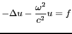
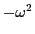
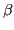

In the areas of acoustics, elasticity, and electromagnetics, the frequency domain approach to wave propagation is very common, particularly when the bandwidth of the signal is narrow and only a few frequencies need to be investigated. Such computation requires the solution of the indefinite Helmholtz problem
 |
(1) |
Finite element and finite difference discretizations of the equation above result in sparse linear systems where the matrix is indefinite and badly conditioned; iterative methods and preconditioners which work nicely for positive-definite elliptic problems typically do not perform well. Traditional multigrid diverges when applied to these problems for a few reasons. First, the indefiniteness of the operator affects the damping properties of smoothers like Jacobi or Gauss-Seidel; these methods are no longer guaranteed to converge. Secondly, the

term shifts the eigenvalues of the Laplacian, causing eigenfunctions associated with small eigenvalues to now be oscillatory; these modes are not represented accurately when projected onto the coarse grid.A method which has gained popularity in the past few years is the Shifted Laplacian preconditioner. The basic idea is to apply an approximate inverse of the shifted problem

is chosen to be small enough, the inverse operator of the shifted problem can act as a good preconditioner to the original problem. Adding the complex shift term to the operator creates the affect of damping in the system, making the problem more elliptic and more conducive to multigrid convergence. In practice, using multigrid with the shifted problem works well as a preconditioner for moderately sized problems.
This talk will present an analysis of Shifted Laplacian preconditioners
through the use of Chebyshev polynomial smoothers in a two-grid setting,
and will attempt to address questions regarding the choice of the
shifting parameters  and
. Namely, how can one choose
these parameters to strike the right balance between multigrid
convergence and accurate inversion of the original problem? Is it
possible to use different shifting parameters on different levels of the
multigrid hierarchy to improve convergence?
and
. Namely, how can one choose
these parameters to strike the right balance between multigrid
convergence and accurate inversion of the original problem? Is it
possible to use different shifting parameters on different levels of the
multigrid hierarchy to improve convergence?